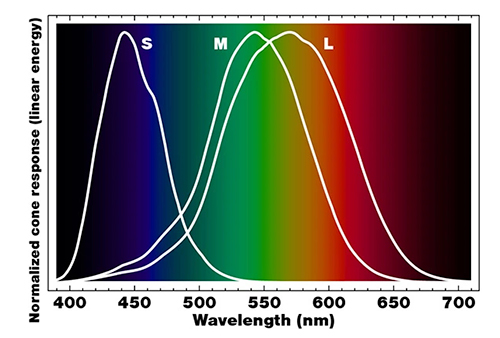

...continued
You have poor vision... sorry. It's true! As a species, Noah Glushien points out that compared to other species, we have a very limited spectrum of colors we can see on the spectrum. He goes into the depths of what exactly cause color blindness, and things that, for him, came into consideration when it happened to be time for him to consider whether or not it may have influenced whether or not he decided to go into more of the design avenue versus the development. Below is a diagram of light waves on a spectrum in his article that display the range of which is available and that of which we can see.
One topic he covers is how to add people with CVD, or Color Vision Deficiency. I think that is a topic that is so crucially important and a part of design as much as any. How do we create a work environment that is all inclusive, one that doesn't push away some defecit, but finds a way to incorporate the contribution that comes from it? I also think it is our duty and responsibility to take into consideration, the defecits people are experiencing or are having to navigate and incorporate them into our design.
He also highlights Geri Coady and her book titled Color Accessibility Workflows. He provides a comopliation of resources for individuals interested in or who want to learn more about CVD in the space of design and web development. He provides lots of valuable resources that would be beneficial for all individuals to thumb through and learn more about the process of Design and Development for the web.
- Cory Risch-Smith